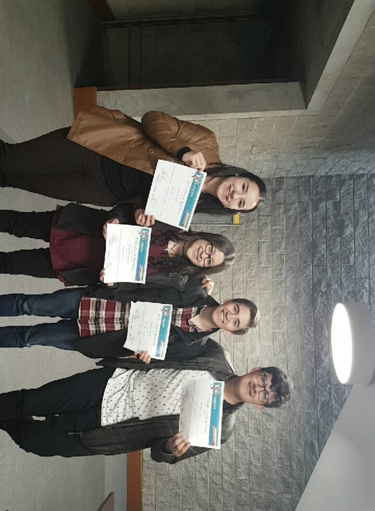
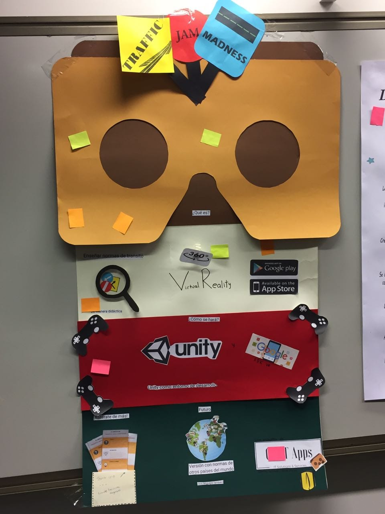
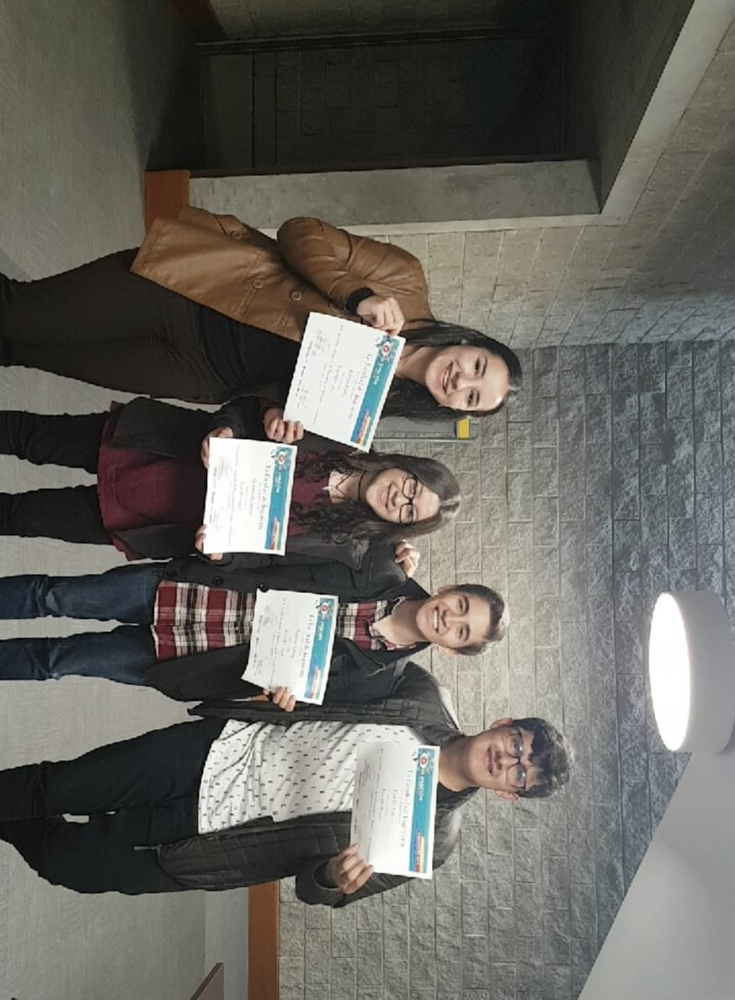
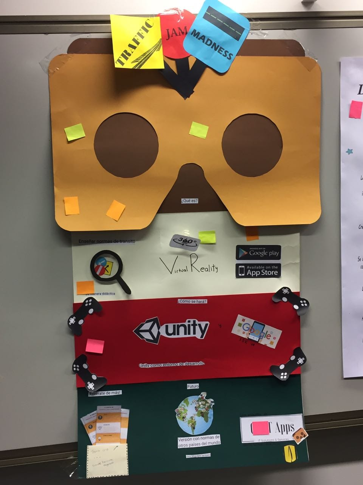

Sometimes five Imprimaturs are seen together dialogue-wise in the piazza of one title-page, complimenting
and ducking each to other with their shaven reverences, whether the author, who stands by in perplexity at
the foot of his epistle, shall to the press or to the sponge.
These are the pretty responsories, these are the dear antiphonies, that so bewitched of late our prelates
and their chaplains with the goodly echo they made; and besotted us to the gay imitation of a lordly
Imprimatur, one from Lambeth House, another from the west end of Paul's; so apishly Romanizing, that the
word of command still was set down in Latin; as if the learned grammatical pen that wrote it would cast no
ink without Latin; or perhaps, as they thought, because no vulgar tongue was worthy to express the pure
conceit of an Imprimatur, but rather, as I hope, for that our English, the language of men ever famous and
foremost in the achievements of liberty, will not easily find servile letters enow to spell such a dictatory
presumption English.

And thus ye have the inventors and the original of book-licensing ripped up and drawn as lineally as any
pedigree. We have it not, that can be heard of, from any ancient state, or polity or church; nor by any
statute left us by our ancestors elder or later; nor from the modern custom of any reformed city or church
abroad, but from the most anti-christian council and the most tyrannous inquisition that ever inquired.
Till then books were ever as freely admitted into the world as any other birth; the issue of the brain was
no more stifled than the issue of the womb: no envious Juno sat cross-legged over the nativity of any man's
intellectual offspring; but if it proved a monster, who denies, but that it was justly burnt, or sunk into
the sea?
But that a book, in worse condition than a peccant soul, should be to stand before a jury ere it be born to
the world, and undergo yet in darkness the judgment of Radamanth and his colleagues, ere it can pass the
ferry backward into light, was never heard before, till that mysterious iniquity, provoked and troubled at
the first entrance of Reformation, sought out new limbos and new hells wherein they might include our books
also within the number of their damned. And this was the rare morsel so officiously snatched up, and so
ill-favouredly imitated by our inquisiturient bishops, and the attendant minorites their chaplains. That ye
like not now these most certain authors of this licensing order, and that all sinister intention was far
distant from your thoughts, when ye were importuned the passing it, all men who know the integrity of your
actions, and how ye honour truth, will clear ye readily.


 


